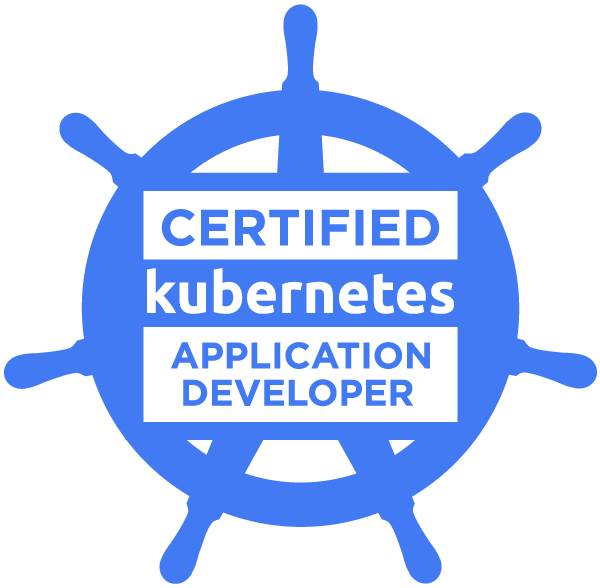

I build scalable cloud infrastructure and automate deployment pipelines that power innovation at scale. 6.5+ years architecting Azure-native platforms, CI/CD for 200+ microservices, and high-performance backend APIs.
30x API optimization, HPA auto-scaling, cluster collocation
$ tail -f /var/log/infra/deploy.log
Code in Production
Real infrastructure patterns shipped to production — typing live.
LIVE
1
mainHCLUTF-8Ln 1, Col 1Spaces: 2
$ cat /etc/profile.d/impact.conf
Impact by the Numbers
Real metrics from infrastructure transformations and platform engineering
0
Years Experience
Cloud & DevOps engineering
0
Microservices
Deployed via automated CI/CD
0
Cost Reduction
Observability stack migration
0
AKS Clusters
Managed & migrated
0
Performance Boost
API communication optimization
0
Certifications
CKA, CKAD, AZ-204, AZ-400
$ grep -r "expertise" /var/log/career.log
./skills --list --verbose
A curated selection of my expertise in DevOps and Cloud Computing
AWS
Azure
Kubernetes
Docker
Helm
Terraform
Ansible
GitHub Actions
Jenkins
GitLab CI
ArgoCD
Azure DevOps
Prometheus
Grafana
ELK Stack
CloudWatch
Trivy
SonarQube
HashiCorp Vault
AWS Secrets Mgr
PostgreSQL
MySQL
MongoDB
DynamoDB
Kafka
Redis
RabbitMQ
Python
Java
Scala
Bash
JavaScript
Node.js
Git
Linux Sys Admin
Networking
$ cat /var/log/work-history.log | head -20
Work Experience
Sr. Digital Engineer 2 (Lead Engineer)
Tata Digital Pvt Ltd. · Payment TechOps
May 2024 — Present
Engineered DR switchover strategy for high-concurrency payment systems, transitioning infrastructure across regions with zero data loss.
Spearheaded migration of 15+ AKS clusters from NGINX Ingress to Gateway API framework, eliminating long-term technical debt.
Designed automated CI/CD framework supporting 200+ microservice deployments with standardized templates and zero-downtime strategies.
Implemented LGTM observability stack on AKS, achieving 66% monthly cost reduction vs Azure Application Insights.
Deployed RabbitMQ & ELK Stack with Filebeat on AKS for end-to-end distributed application monitoring.
Built reusable Terraform modules for Azure resources (VMs, Web Apps, AKS) enabling consistent multi-environment deployments.
Architected DevSecOps framework with Checkmarx (SAST), DefectDojo, and SonarQube for 100% pre-deployment vulnerability scanning.
Developed automated service recovery solution by creating systemd service files for 7–10 Java Spring Boot applications across ~20 Azure Linux VMs, enabling automatic process startup post-patching — eliminating 4+ hours of manual intervention per maintenance window and saving 95% of recovery time. 🏆 Quarterly Employee Award ✨
Led the lift-and-shift migration of services from Azure Cloud to an on-premises Rancher Kubernetes cluster, achieving a 30x improvement in API-to-API communication through cluster collocation.
Authored YAML manifests for Azure DevOps pipelines to build and push Docker images to Azure Container Registry (ACR) and deploy Helm charts to AKS clusters (Deployments, Secrets, Ingress, ConfigMaps, PVC, PV) with HPA for autoscaling.
Provisioned PVC and PV Kubernetes objects to persist pod log files (JVM heap dumps, GC logs) to NFS-backed Azure Files storage.
Configured NGINX Ingress Controller for service load balancing and enforced TLS/SSL termination for secure API communication.
Created Azure DevOps build pipelines for Gradle-based Java and Scala projects, publishing versioned Docker images to ACR.
Designed application deployment pipelines using Azure Pipelines for streamlined releases across Dev, UAT, and Production environments.
Implemented REST endpoints for readiness and liveness probes to ensure robust container health monitoring.
Integrated WhiteSource vulnerability scanning into the container build process to enforce security compliance before deployment.
Configured Dependabot with Gradle to automatically generate pull requests for dependency updates, proactively addressing security vulnerabilities.
Implemented Azure Application Insights to monitor container resource utilization (memory, CPU, request throughput) and configured alerting rules for proactive incident response.
Integrated Application Insights with services for centralized logging and telemetry collection using the OpenTelemetry (OTel) agent.
Integrated SonarQube with the CI pipeline using the Scoverage tool to enforce code quality standards and track code coverage metrics.
Developed Bash scripts to automate repetitive pipeline tasks, reducing manual intervention and improving deployment consistency.
Designed and implemented a high-performance REST API server using JAX-RS and Scala, leveraging Scala's functional and object-oriented capabilities to deliver efficient, scalable, and maintainable code.
Implemented concurrent and parallel processing using Scala Futures, Parallel Collections, and advanced collection operations to significantly improve application performance and throughput.
Managed asynchronous task execution using CompletableFuture, ensuring efficient utilization of system resources and optimized performance for multi-threaded applications.
Implemented API authorization using OAuth 2.0, JWK, and JWT to enforce secure access control across services.
Integrated SonarQube with the Scoverage tool and increased code coverage from 60% to 91%, improving overall code quality and reducing technical debt.
Optimized build and regression test performance by implementing parallel execution of JUnit tests written with ScalaTest (WordSpec), reducing overall test duration by 30–40%.
Developed a performance and load testing framework using Gatling to benchmark and validate the scalability of the analytics engine API.
Authored complex SQL queries against relational databases to validate data integrity returned by the DB API layer.
Developed a Python automation tool to publish TeamCity test results to Confluence pages, streamlining reporting workflows.
ScalaJavaJAX-RSPythonOAuthGatlingScalaTestSQL
$ ls -la /etc/certifications/
Certifications
CKA
Certified Kubernetes Administrator
CNCF · Valid till July 2026

CKAD
Certified Kubernetes Application Developer
CNCF · Valid till July 2026
AZ-204
Azure Developer Associate
Microsoft · Valid till Oct 2026
AZ-400
Azure DevOps Engineer Expert
Microsoft · Valid till Oct 2026
$ git log --oneline --graph /projects/
Featured Projects
01
UPI Payment Platform — Infra & CI/CD
Architected the complete Production and DR infrastructure for the UPI payment track on Azure using Terraform, and built CI/CD pipelines for 15+ microservices across Dev, SIT, and Prod.
Provisioned end-to-end Azure infrastructure using Terraform modules — AKS clusters, Key Vault, PostgreSQL, MongoDB, Redis Cache, Event Hub, Grafana, DNS Zones, NSGs, VNets, Subnets, Storage Accounts, and networking rules.
Designed and configured DR environment mirroring production for high-availability and business continuity.
Built standardized Azure DevOps CI/CD pipelines for 15+ microservices with Helm chart deployments, automated testing, and zero-downtime rollout strategies across three environments.
Implemented environment-specific variable management using Terraform workspaces and ADO variable groups.
Built a standardized, automated CI/CD pipeline framework with Azure DevOps supporting 200+ microservices with zero-downtime deployments.
Designed reusable YAML pipeline templates consumed by 200+ microservice repositories, ensuring consistent build, test, and deployment workflows.
Integrated DevSecOps gates including Checkmarx (SAST), SonarQube code quality checks, and container vulnerability scanning prior to deployment.
Implemented Helm chart management with automated versioning and rollback capabilities for AKS deployments.
Achieved zero-downtime deployments using rolling update strategies and health-check validations.
Azure DevOpsHelmDockerDevSecOps
03
LGTM Observability Stack
Spearheaded POC and implementation of the LGTM observability stack on AKS, resulting in 66% monthly cost reduction versus Azure Application Insights.
Deployed Loki for log aggregation, Grafana for dashboarding, Tempo for distributed tracing, and Mimir for long-term metrics storage on AKS.
Migrated monitoring from Azure Application Insights to the LGTM stack, reducing monthly observability costs by 66%.
Created custom Grafana dashboards for real-time service health, latency tracking, and resource utilization across all environments.
Established alerting rules and on-call notification workflows integrated with team communication channels.
GrafanaLokiTempoMimirKubernetes
04
Exposure Calculator Service
Built a high-performance REST API server using Scala & Jetty with multi-threaded parallel processing. Achieved 30x API communication improvement.
Designed and implemented a high-performance server with multiple endpoints using Jetty and Scala, leveraging functional and object-oriented paradigms for scalable code.
Implemented concurrent processing using Scala Futures, Parallel Collections, and ExecutionContext for optimized multi-threaded performance.
Achieved 30x enhancement in API-to-API communication by strategically leveraging cluster collocation benefits.